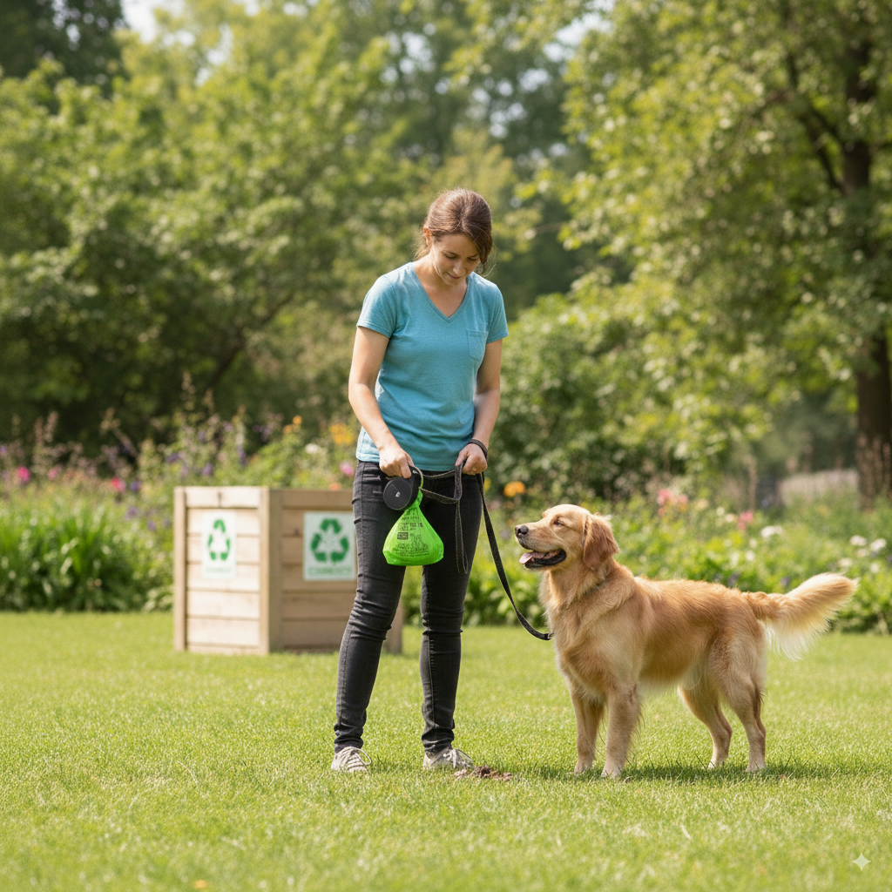

Best Biodegradable Dog Poop Bags 2025: Earth-Rated vs Competitors
Looking for eco-friendly dog poop bags that actually break down? You're not alone! With millions of plastic poop bags ending up in landfills each year, biodegradable options are becoming essential for environmentally conscious pet parents.
Why Choose Biodegradable Poop Bags?
Traditional plastic poop bags can take hundreds of years to decompose, contributing to the massive plastic pollution problem. Biodegradable options break down much faster 🌱 these eco-friendly poop bags and are made from plant-based materials, making them a much greener choice.
Earth-Rated Biodegradable Poop Bags: Our Top Pick
Earth-Rated has become a leader in eco-friendly pet products, and their biodegradable poop bags are no exception. Made from cornstarch and other plant-based materials, these bags break down in just 12-24 months compared to hundreds of years for traditional plastic.
Key Benefits:
- Made from cornstarch and plant materials
- Break down in 12-24 months
- Scented with lavender for odor control
- Available in multiple sizes
- FDA compliant and safe
- 270 bags per roll for great value
How Do They Compare to Regular Plastic Bags?
| Feature | Earth-Rated Biodegradable | Regular Plastic |
|---|---|---|
| Decomposition Time | 12-24 months | 100+ years |
| Material | Plant-based | Petroleum-based |
| Environmental Impact | Minimal | High |
| Cost | Slightly higher | Lower |
| Odor Control | Lavender scented | Unscented |
Our Recommendation
For eco-conscious pet parents, Earth-Rated Biodegradable You can 🛒 grab the top-rated biodegradable bags here Poop Bags are the clear winner. While they cost a bit more upfront, the environmental benefits far outweigh the small price difference. Plus, the lavender scent helps with odor control, making cleanup more pleasant.
Try Earth-Rated Biodegradable Poop Bags today!
Tips for Using Biodegradable Poop Bags
- Store properly: Keep them in a cool, dry place
- Use quickly: Don't let them sit in landfills for extended periods
- Compost if possible: Some biodegradable bags can be composted
- Buy in bulk: Save money and reduce packaging waste
The Bottom Line
Switching to biodegradable poop bags is one of the easiest ways to reduce your pet's environmental impact. Earth-Rated makes this transition simple with their high-quality, affordable options.
Get started with Earth-Rated today and make a difference!